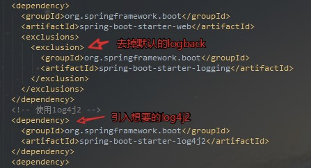

前言
夜空中最亮的星，2018请照亮我前行~ Maven是我们日常开发都会用到的，新年第一天，把看过的Maven基础概念做了整理，作为入门和查阅使用。
正文
Maven概念
Maven作为一个构建工具，不仅能帮我们自动化构建，还能够抽象构建过程，提供构建任务实现;它跨平台，对外提供了一致的操作接口，这一切足以使它成为优秀的、流行的构建工具。
Maven不仅是构建工具，还是一个依赖管理工具和项目管理工具，它提供了中央仓库，能帮我自动下载构件。
maven的安装
一：因为本人是window系统，所以这里只介绍window下如何安装，在安装Maven之前，先确认已经安装了JDK.
image.png
二：接着去Maven官网下载界面下载想要的版本解压到你想要的目录就行
image.png
image.png
三：最后设置一下环境变量，将Maven安装配置到操作系统环境中，主要就是配置M2_HOME 和PATH两项，如图
image.png
都搞定后，验证一下，打开doc输入 mvn -v如何得到下面信息就说明配置成功了
image.png
maven目录
image.png
- bin目录：
该目录包含了mvn运行的脚本，这些脚本用来配置java命令，准备好classpath和相关的Java系统属性，然后执行Java命令。 - boot目录:
该目录只包含一个文件，该文件为plexus-classworlds-2.5.2.jar。plexus-classworlds是一个类加载器框架，相对于默认的java类加载器，它提供了更加丰富的语法以方便配置，Maven使用该框架加载自己的类库。 - conf目录:
该目录包含了一个非常重要的文件settings.xml。直接修改该文件，就能在机器上全局地定制Maven的行为，一般情况下，我们更偏向于复制该文件至/.m2/目录下（表示用户目录），然后修改该文件，在用户范围定制Maven的行为。 - lib目录:
该目录包含了所有Maven运行时需要的Java类库，Maven本身是分模块开发的，因此用户能看到诸如maven-core-3.0.jar、maven-model-3.0.jar之类的文件，此外这里还包含一些Maven用到的第三方依赖如commons-cli-1.2.jar、commons-lang-2.6.jar等等。
Maven常用命令说明
mvn clean：表示运行清理操作（会默认把target文件夹中的数据清理）。
mvn clean compile：表示先运行清理之后运行编译，会将代码编译到target文件夹中。
mvn clean test：运行清理和测试。
mvn clean package：运行清理和打包。
mvn clean install：运行清理和安装，会将打好的包安装到本地仓库中，以便其他的项目可以调用。
mvn clean deploy：运行清理和发布（发布到私服上面）。
上面的命令大部分都是连写的，大家也可以拆分分别执行，这是活的，看个人喜好以及使用需求，Eclipse Run as对maven项目会提供常用的命令。
设置http代理
编辑seeting.xml文件
有时候你所在的公司基于安全因素考虑，要求你使用通过安全认证的代理访问因特网。这种情况下，就需要为Maven配置HTTP代理，才能让它正常访问外部仓库，以下载所需要的资源。首先确认自己无法直接访问公共的maven中央仓库，直接运行命令ping repo1.maven.org可以检查网络。如果真的需要代理，先检查一下代理服务器是否畅通。比如现在有一个IP地址为218.14.227.197，端口为3128的代理服务，我们可以运行telnet 218.14.227.197 3128来检测该地址的该端口是否畅通。如果得到出错信息，需要先获取正确的代理服务信息，如果telnet连接正确，则输入ctrl+]，然后q，回车，退出即可。
检查完毕之后，编辑~/.m2/settings.xml文件(如果没有该文件，则复制$M2_HOME/conf/settings.xml)。添加代理配置如下：
1 | <settings> |
这段配置十分简单，proxies下可以有多个proxy元素，如果声明了多个proxy元素，则默认情况下第一个被激活的proxy会生效。这里声明了一个id为my-proxy的代理，active的值为true表示激活该代理，protocol表示使用的代理协议，这里是http。当然，最重要的是指定正确的主机名(host元素)和端口(port元素)。上述xml配置中注释掉了username,password,nonProxyHosts几个元素。当代理服务需要认证时，就需要配置username和password。nonProxyHost元素用来指定哪些主机不需要代理，可以使用”|”符号来分隔多个主机名。此外，该配置也支持通配符，如:*.google.com表示所有以google.com结尾的域名访问都不要通过代理。
Maven插件安装，基于IDEA
博主现在使用IDEA来开发的，所以这里介绍一下IDEA中如何配置引入我们上面下载好的Maven
image.png
Maven使用
1 | <?xml version="1.0" encoding="UTF-8"?> |
代码的第一行是XML头，指定了该xml文档的版本和编码方式。
project是所有pom.xml的根元素，它还声明了一些POM相关的命名空间及xsd元素。
根元素下的第一个子元素modelVersion指定了当前的POM模型的版本，对于Maven3来说，它只能是4.0.0
代码中最重要是包含了groupId,artifactId和version了。这三个元素定义了一个项目基本的坐标，在Maven的世界，任何的jar、pom或者jar都是以基于这些基本的坐标进行区分的。
groupId定义了项目属于哪个组，随意命名，比如谷歌公司的myapp项目，就取名为 com.google.myapp
artifactId定义了当前Maven项目在组中唯一的ID,比如定义hello-world。
version指定了项目当前的版本0.0.1-SNAPSHOT,SNAPSHOT意为快照，说明该项目还处于开发中，是不稳定的。
name元素生命了一个对于用户更为友好的项目名称，虽然这不是必须的，但还是推荐为每个POM声明name,以方便信息交流
依赖的配置
1 | <project> |
根元素project下的dependencies可以包含一个或者多个dependency元素，以声明一个或者多个项目依赖。每个依赖可以包含的元素有：
- grounpId、artifactId和version:以来的基本坐标，对于任何一个依赖来说，基本坐标是最重要的，Maven根据坐标才能找到需要的依赖。
- type:依赖的类型，对于项目坐标定义的packaging。大部分情况下，该元素不必声明，其默认值为jar
- scope:依赖的范围
- optional:标记依赖是否可选
- exclusions:用来排除传递性依赖
依赖范围
依赖范围就是用来控制依赖和三种classpath(编译classpath，测试classpath、运行classpath)的关系，Maven有如下几种依赖范围：
- compile:编译依赖范围。如果没有指定，就会默认使用该依赖范围。使用此依赖范围的Maven依赖，对于编译、测试、运行三种classpath都有效。典型的例子是spring-code,在编译、测试和运行的时候都需要使用该依赖。
- test: 测试依赖范围。使用次依赖范围的Maven依赖，只对于测试classpath有效，在编译主代码或者运行项目的使用时将无法使用此依赖。典型的例子是Jnuit,它只有在编译测试代码及运行测试的时候才需要。
- provided:已提供依赖范围。使用此依赖范围的Maven依赖，对于编译和测试classpath有效，但在运行时候无效。典型的例子是servlet-api,编译和测试项目的时候需要该依赖，但在运行项目的时候，由于容器以及提供，就不需要Maven重复地引入一遍。
- runtime:运行时依赖范围。使用此依赖范围的Maven依赖，对于测试和运行classpath有效，但在编译主代码时无效。典型的例子是JDBC驱动实现，项目主代码的编译只需要JDK提供的JDBC接口，只有在执行测试或者运行项目的时候才需要实现上述接口的具体JDBC驱动。
- system:系统依赖范围。该依赖与三种classpath的关系，和provided依赖范围完全一致，但是，使用system范围的依赖时必须通过systemPath元素显示地指定依赖文件的路径。由于此类依赖不是通过Maven仓库解析的，而且往往与本机系统绑定，可能构成构建的不可移植，因此应该谨慎使用。systemPath元素可以引用环境变量，如：
1 | <dependency> |
- import:导入依赖范围。该依赖范围不会对三种classpath产生实际的影响。
上述除import以外的各种依赖范围与三种classpath的关系如下:
image.png
传递性依赖
比如一个account-email项目为例，account-email有一个compile范围的spring-code依赖，spring-code有一个compile范围的commons-logging依赖，那么commons-logging就会成为account-email的compile的范围依赖，commons-logging是account-email的一个传递性依赖
image.png
有了传递性依赖机制，在使用Spring Framework的时候就不用去考虑它依赖了什么，也不用担心引入多余的依赖。Maven会解析各个直接依赖的POM，将那些必要的间接依赖，以传递性依赖的形式引入到当前的项目中。
依赖范围
假设A依赖于B,B依赖于C，我们说A对于B是第一直接依赖，B对于C是第二直接依赖，A对于C是传递性依赖。第一直接依赖和第二直接依赖的范围决定了传递性依赖的范围，如下图所示，最左边一行表示第一直接依赖范围，最上面一行表示第二直接依赖范围，中间的交叉单元格则表示传递依赖范围。
image.png
从上图中，我们可以发现这样的规律：
- 当第二直接依赖的范围是compile的时候，传递性依赖的范围与第一直接依赖的范围一致；
- 当第二直接依赖的范围是test的时候，依赖不会得以传递；
- 当第二直接依赖的范围是provided的时候，只传递第一直接依赖范围也为provided的依赖，切传递依赖的范围同样为provided;
- 当第二直接依赖的范围是runtime的时候，传递性依赖的范围与第一直接依赖的范围一致，但compile列外，此时传递性依赖范围为runtime.
依赖调解
有时候，当传递性依赖造成为题的时候，就需要清楚地知道该传递性依赖是从哪条依赖路径引入的。这就是依赖调解的作用，依赖调解有两大原则：
- 路径最近者优先
比如项目有A有这样的依赖关系：A->B->C->X(1.0)、A->D->X(2.0),X是A的传递性依赖，但是两条依赖路径上有两个版本的X，所以根据第一原则，A->D->X(2.0)路径短，所以X(2.0)会被解析使用 - 第一声明者优先
如果路径都一样长的话，第一原则就不行了，比如 A->B->Y(1.0)、A->C->Y(2.0),Y(1.0)和Y(2.0)的路径一样，所以这时候根据第二原则，先声明的被解析。
可选依赖
image.png
如图，项目中A依赖B，B依赖于X和Y，如果所有这三个的范围都是compile的话，那么X和Y就是A的compile范围的传递性依赖，但是如果我想X,Y不作为A的传递性依赖，不给他用的话。就需要下面提到的配置可选依赖。
1 | <project> |
配置也简单，在依赖里面添加
1 | <optional>true</optional> |
就表示可选依赖了，这样A如果想用X,Y就要直接显示的添加依赖了。
排除依赖
有时候你引入的依赖中包含你不想要的依赖包，你想引入自己想要的，这时候就要用到排除依赖了，比如下图中spring-boot-starter-web自带了logback这个日志包，我想引入log4j2的，所以我先排除掉logback的依赖包，再引入想要的包就行了

image.png
排除依赖代码结构：
1 | <exclusions> |
这里注意：声明exclustion的时候只需要groupId和artifactId，而不需要version元素，这是因为只需要groupId和artifactId就能唯一定位依赖图中的某个依赖。
归类依赖
有时候我们引入的很多依赖包，他们都来自同一个项目的不同模块，所以他们的版本号都一样，这时候我们可以用属性来统一管理版本号
1 | <project> |
如图所示，先通过
1 | </properties> |
来定义，然后在下面依赖使用${}来引入你的属性。
仓库
这节将介绍仓库的由来、布局、分类、配置、内部工作机制、镜像等概念
仓库的由来
在Maven世界中，任何一个依赖、插件或者项目构建的输出，都可以称为构件。得益于坐标机制，任何Maven项目使用任何一个构件的方式都是完全相同的。在此基础上，Maven可以在某个位置统一存储所有Maven项目共享的构件，这个统一的位置就是仓库。
实际的Maven项目将不再各自存储其依赖文件，它们只需要声明这些依赖的坐标，在需要的时候（例如，编译项目的时候需要将依赖加入到classpath中），Maven会自动根据坐标找到仓库中的构件，并使用它们。
为了实现重用，项目构建完毕后可生成的构件也可以安装或者部署到仓库中，供其他项目使用。
仓库的布局
任何一个构件都有其唯一的坐标，根据这个坐标可以定义其在仓库中的唯一存储路径，这便是Maven的仓库布局方式。
该路经与坐标对应关系为groupId/artifactId/version/artifactId-version.packaging。
举个例子，比如下面这个分页插件依赖如下：
1 | <dependency> |
那他对应的仓库的路径就是这样：
image.png
Maven仓库是基于简单文件系统存储的，我们也理解其存储方式、因此，当遇到一些与仓库相关的问题时，可以很方便的查找相关文件，方便定位问题。
仓库的分类
image.png
本地仓库
一般来说，在Maven项目目录下，没有诸如lib/这样用来存放依赖文件的目录。当Maven在执行编译或测试时，如果需要使用依赖文件，它总是基于坐标使用本地仓库的依赖文件。
默认情况下，不管在Window还是Linux下，每个用户在自己用户目录下都有一个路径名为.m2/repository/的仓库目录。
如果你想自定义本地仓库目录地址。你可以编辑文件~/.m2/settings.xml，设置localRepository元素的值为想要的仓库地址，例如:
1 | <settings> |
这样，该用户的本地仓库地址就被设置成了 D:\java\repository\。
需要注意的是，默认情况下，~/.m2/settings.xml文件不存在，用户需要从Maven安装目录复制$M2_HOME/conf/settings.xml文件再进行编辑。
远程仓库-中央仓库
由于最原始的本地仓库是空的，Maven必须知道至少一个可用的远程仓库，才能在执行Maven命令的时候下载到需要的构件。中央仓库就是这样一个默认的远程仓库，Maven的安装文件自带了中央仓库的配置。
中央仓库包含了这个世界上绝大多数流行的开源Java构件，以及源码、作者信息、SCM,信息、许可证信息等，每个月这里都会接受全世界Java程序员大概1亿次的访问，它对全世界Java开发者的贡献由此可见一斑。
远程仓库-私服
私服是一种特殊的远程仓库，它是架设在局域网内的仓库服务，私服代理广域网上的远程仓库，供局域网内的Maven用户使用。当Maven需要下载构件的时候，它从私服请求，如果私服上不存在该构件，则从外部的远程仓库下载，缓存在私服上之后，再为Maven的下载请求提供服务。因此，一些无法从外部仓库下载到的构件也能从本地上传到私服上供大家使用。
私服的好处：
- 节省自己的外网速度
- 加速Maven构建
- 部署第三方构建
- 提高稳定性，增强控制
- 降低中央仓库的负荷
远程仓库的配置
在平时的开发中，我们往往不会使用默认的中央仓库，默认的中央仓库访问的速度比较慢，访问的人或许很多，有时候也无法满足我们项目的需求，可能项目需要的某些构件中央仓库中是没有的，而在其他远程仓库中有，如JBoss Maven仓库。这时，可以在pom.xml中配置该仓库，代码如下：
1 | <!-- 配置远程仓库 --> |
- repository:在repositories元素下，可以使用repository子元素声明一个或者多个远程仓库。
- id：仓库声明的唯一id，尤其需要注意的是，Maven自带的中央仓库使用的id为central，如果其他仓库声明也使用该id，就会覆盖中央仓库的配置。
- name：仓库的名称，让我们直观方便的知道仓库是哪个，暂时没发现其他太大的含义。
- url：指向了仓库的地址，一般来说，该地址都基于http协议，Maven用户都可以在浏览器中打开仓库地址浏览构件。
- releases和snapshots：用来控制Maven对于发布版构件和快照版构件的下载权限。需要注意的是enabled子元素，该例中releases的enabled值为true，表示开启JBoss仓库的发布版本下载支持，而snapshots的enabled值为false，表示关闭JBoss仓库的快照版本的下载支持。根据该配置，Maven只会从JBoss仓库下载发布版的构件，而不会下载快照版的构件。
- layout：元素值default表示仓库的布局是Maven2及Maven3的默认布局，而不是Maven1的布局。基本不会用到Maven1的布局。
- 其他：对于releases和snapshots来说，除了enabled，它们还包含另外两个子元素updatePolicy和checksumPolicy。
1：元素updatePolicy用来配置Maven从远处仓库检查更新的频率，默认值是daily，表示Maven每天检查一次。其他可用的值包括：never-从不检查更新；always-每次构建都检查更新；interval：X-每隔X分钟检查一次更新（X为任意整数）。
2：元素checksumPolicy用来配置Maven检查校验和文件的策略。当构建被部署到Maven仓库中时，会同时部署对应的检验和文件。在下载构件的时候，Maven会验证校验和文件，如果校验和验证失败，当checksumPolicy的值为默认的warn时，Maven会在执行构建时输出警告信息，其他可用的值包括：fail-Maven遇到校验和错误就让构建失败；ignore-使Maven完全忽略校验和错误。
远程仓库的认证
大部分的远程仓库不需要认证，但是如果是自己内部使用，为了安全起见，还是要配置认证信息的。
配置认证信息和配置远程仓库不同，远程仓库可以直接在pom.xml中配置，但是认证信息必须配置在settings.xml文件中。这是因为pom往往是被提交到代码仓库中供所有成员访问的，而settings.xml一般只存在于本机。因此，在settings.xml中配置认证信息更为安全。
1 | <settings> |
这里除了配置账号密码之外，值关键的就是id了，这个id要跟你在pom.xml里面配置的远程仓库repository的id一致，正是这个id将认证信息与仓库配置联系在了一起。
部署构件至远程仓库
我们自己搭建远程仓库的目的就是为了可以方便部署我们自己项目的构件以及一些无法从外部仓库直接获取的构件。这样才能在开发时，供其他对团队成员使用。
Maven除了能对项目进行编译、测试、打包之外，还能将项目生成的构件部署到远程仓库中。首先，需要编辑项目的pom.xml文件。配置distributionManagement元素，代码如下：
1 | <distributionManagement> |
看代码，从命名上就看的出来区别，repository表示表示发布版本（稳定版本）构件的仓库，snapshotRepository表示快照版本（开发测试版本）的仓库。这两个元素都需要配置id、name和url，id为远程仓库的唯一标识，name是为了方便人阅读，关键的url表示该仓库的地址。
配置好了就运行命令mvn clean deploy，Maven就会将项目构建输出的构件部署到配置对应的远程仓库，如果项目当前的版本是快照版本，则部署到快照版本的仓库地址，否则就部署到发布版本的仓库地址。
当前项目是快照还是发布版本是通过
镜像
如果仓库X可以提供仓库Y存储的所有内容，那么就可以认为X是Y的一个镜像。用过Maven的都知道，国外的中央仓库用起来太慢了，所以选择一个国内的镜像就很有必要，我推荐国内的阿里云镜像。
阿里云镜像：配置很简单，修改conf文件夹下的settings.xml文件，添加如下镜像配置：
1 | <mirrors> |
上例子中，
这里介绍下<mirrorOf>配置的各种选项
<mirrorOf>*<mirrorOf>:匹配所有远程仓库。<mirrorOf>external:*<mirrorOf>:匹配所有远程仓库，使用localhost的除外，使用file://协议的除外。也就是说，匹配所有不在本机上的远程仓库。<mirrorOf>repo1,repo2<mirrorOf>:匹配仓库repo1h和repo2，使用逗号分隔多个远程仓库。<mirrorOf>*,!repo1<mirrorOf>:匹配所有远程仓库，repo1除外，使用感叹号将仓库从匹配中排除。
需要注意的是，由于镜像仓库完全屏蔽了被镜像仓库，当镜像仓库不稳定或者停止服务的时候，Maven仍将无法访问被镜像仓库，因而将无法下载构件。
仓库服务搜索
这里介绍2个提供仓库服务搜索的地址：
- Sonatype Nexus：https://repository.sonatype.org/
- MVNrepository：http://mvnrepository.com/
——————— 本文来地址请点击：https://www.jianshu.com/p/41d07cf95482